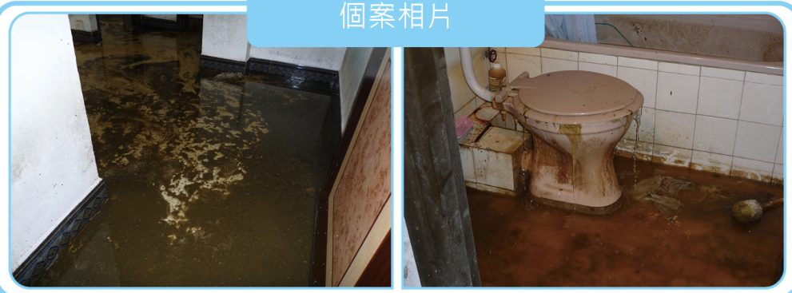
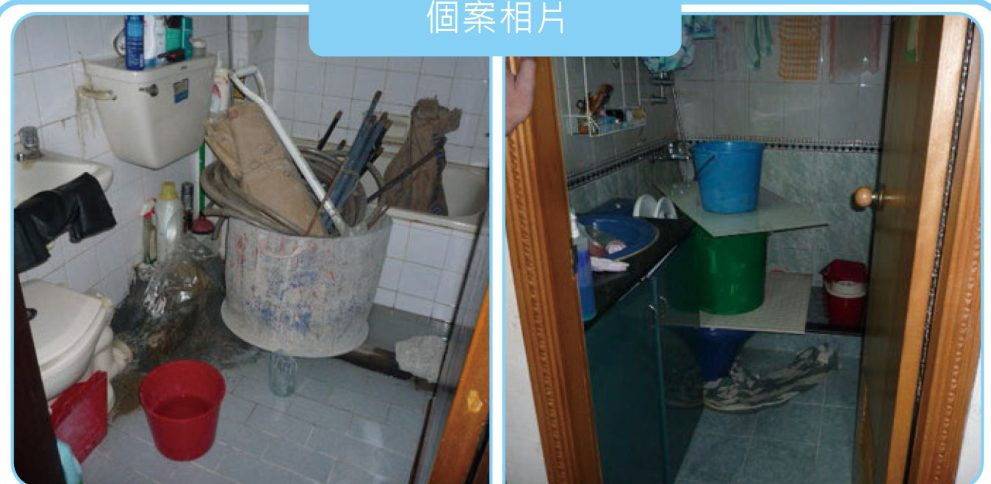
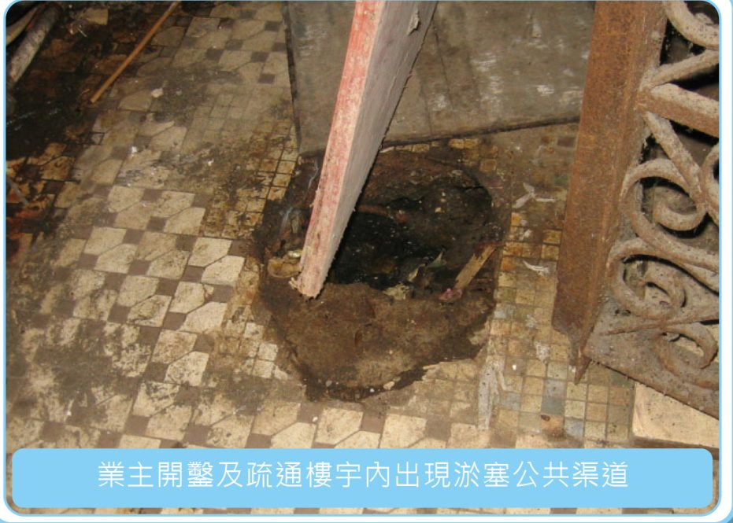

成功個案：肯合作，問題通常都解決得到
滲漏水問題得到圓滿解決之關鍵，除了中心各部門間之協助外，相關業主們之充分合作及儘快履行維修責任也十分重要！ 以下三宗都是刊物記載的真實個案。
個案 1 · 廁所持續反湧
事件：某低層樓宇 1 樓 C 單位內廁所持續反湧，一個月後糞水浸滿整個單位並流出公共走廊及樓梯，臭氣沖天，嚴重影響大廈衛生。
處理：該單位無人居住，中心成員經多種途徑輾轉聯絡在內地的業主。業主既擔心自己單位結構受損，又怕影響鄰居生命安全，即時聘用渠務工人進入單位處理積水並立即回澳。經土地工務局檢查後，證實大廈公共污水渠出現淤塞，中心成員通知全大廈各業主須要進行維修，業主們集資聘請專業渠道師傅緊急搶修，最終滲漏問題獲得解決。

圖：《處理樓宇滲漏常識》P.22 · 個案 1 相片
個案 2 · 住宅直身渠道嚴重淤塞
事件：3 樓 C 單位表示 1 樓 C 單位較早前廁所去水位反湧且封了去水位，現在 2 樓 C 單位廁所去水位反湧，擔心將來 3 樓 C 單位同樣出現反湧情況。
處理：中心成員召集 C 座單位業主或代表，在 C 座地舖共同商議塞渠事宜，並取得共識初步先找多名渠道師傅作檢查。經渠道師傅維修，反湧情況已得到解決。

圖：《處理樓宇滲漏常識》P.23 · 個案 2 相片
個案 3 · 疏通街道渠網
事件：某樓宇 2 樓單位座廁出現反湧，及後樓上 3 樓及 4 樓出現相同情況。經各業主共同聘請之專業渠務人員鑑定是大廈公共渠出現淤塞，但未肯定淤塞位置。
處理：在進行聯合行動中，根據圖則資料及經試水測試後，懷疑埋藏於大廈出入口地面下一段公共渠道出現淤塞。相關業主即時配合進行樓宇內渠道之疏通工作，同一時間市政署亦檢查、疏通並證實連接樓宇之街道渠網運作正常，問題因而獲得解決。

圖：《處理樓宇滲漏常識》P.17 · 業主開鑿及疏通樓宇內出現淤塞公共渠道